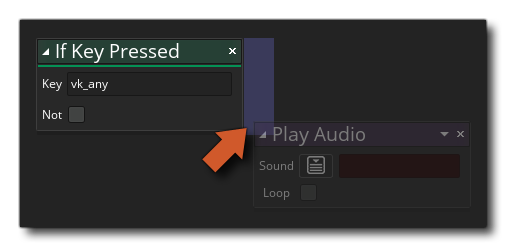

Si la clé est relâchée Si la clé est relâchée
Si la clé est relâchée Si la clé est relâchée Cette action vérifie si une touche du clavier a été relâchée. Il reviendra true sur la coche de jeu unique que la clé est relâchée et false à tous les autres moments. Si vous activez le not modificateur, cette action sera inversée et vérifiera si la clé n'a pas été relâchée, en retournant false sur le tick du jeu qu'il a été publié et true à tous les autres moments.
Notez que pour ajouter des actions dans le bloc "if", elles doivent être laissées sur le côté de l'action, comme indiqué dans l'image ci-dessous:
 Ces actions seront maintenant exécutées si le "si" est évalué à true, alors que toutes les actions abandonnées ailleurs seront effectuées après le bloc "if".
Argument La description Key Le nom de la clé à vérifier. Not Annule le contrôle (vrai devient faux et vice versa)

Le code de bloc d'action ci-dessus interroge l'état du clavier à chaque étape et, si une touche est maintenue enfoncée, il vérifie si la touche est enfoncée une première fois. Si le chèque est true lors de la première pression vers le bas, un son est émis, puis, lorsque la touche est maintenue enfoncée, le mélange des images-objets est modifié en rouge. Si la touche n'est pas maintenue enfoncée, une vérification est effectuée sur le déclencheur pour réinitialiser la couleur de fusion au blanc.